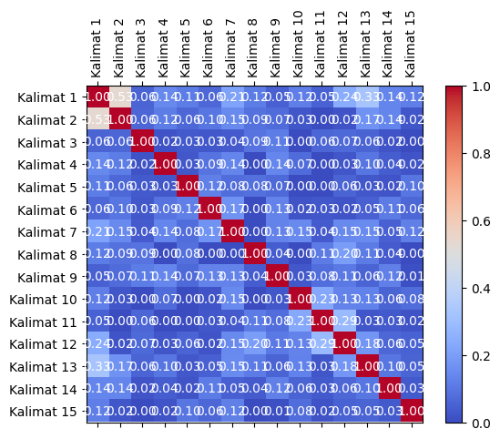
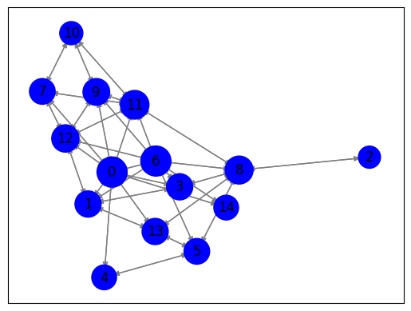

Tugas Graph & Rank Kalimat Lanjutan#
import nltk
nltk.download('stopwords')
import requests
from bs4 import BeautifulSoup
from nltk.corpus import stopwords
from sklearn.feature_extraction.text import TfidfVectorizer
from sklearn.metrics.pairwise import cosine_similarity
import pandas as pd
import numpy as np
import matplotlib.pyplot as plt
import networkx as nx
[nltk_data] Downloading package stopwords to /root/nltk_data...
[nltk_data] Package stopwords is already up-to-date!
Crawling#
# Unduh konten halaman web berita
url = "https://www.antaranews.com/berita/3821781/kementerian-pupr-menerapkan-transformasi-digital-dalam-pembangunan-ikn?utm_source=antaranews&utm_medium=desktop&utm_campaign=terkini"
response = requests.get(url)
html = response.text
# Parsing halaman web menggunakan BeautifulSoup
soup = BeautifulSoup(html, 'html.parser')
# Ekstraksi teks dari elemen-elemen yang berisi berita
article = soup.find('div', class_="post-content clearfix") # Sesuaikan dengan struktur HTML halaman web berita
article_text = article.get_text()
# Preprocessing
# Lowercasing
article_text = article_text.lower()
Cleansing#
# Cleaning
article_text = ''.join(e for e in article_text if (e.isalnum() or e.isspace() or e == '.'))
# Hapus Angka
article_text = ''.join([char for char in article_text if not char.isdigit()])
Tokenisasi#
# Tokenisasi teks menjadi kalimat menggunakan nltk
nltk.download('punkt')
sentences = nltk.sent_tokenize(article_text)
# Tokenisasi setiap kalimat menjadi kata-kata
words = [nltk.word_tokenize(sentence) for sentence in sentences]
# Stopword Removal
stop_words = set(stopwords.words('indonesian'))
filtered_sentences = []
for sentence in words:
filtered_sentence = [word for word in sentence if word.lower() not in stop_words]
filtered_sentences.append(filtered_sentence)
# Cetak kalimat-kalimat yang telah diproses
for filtered_sentence in filtered_sentences:
print(filtered_sentence)
# Tutup respons setelah digunakan
response.close()
# Menghitung jumlah kata yang diambil
total_words = sum(len(sentence) for sentence in filtered_sentences)
# Cetak jumlah kata yang diambil
print(f"Jumlah kata yang diambil dari berita: {total_words}")
['kementerian', 'pupr', 'menerapkan', 'komponen', 'spbe', 'tahapan', 'perencanaan', 'konstruksi', 'monitoringnya', '...', 'jakarta', 'kementerian', 'pekerjaan', 'perumahan', 'rakyat', 'pupr', 'menerapkan', 'transformasi', 'digital', 'sistem', 'pemerintahan', 'berbasis', 'elektronik', 'spbe', 'pembangunan', 'kota', 'negara', 'ikn', 'nusantara', '.']
['pembangunan', 'ikn', 'kementerian', 'pupr', 'menerapkan', 'komponen', 'spbe', 'tahapan', 'perencanaan', 'konstruksi', 'monitoringnya', 'staf', 'ahli', 'menteri', 'pupr', 'bidang', 'ekonomi', 'investasi', 'dadang', 'rukmana', 'jakarta', 'senin', '.']
['dadang', 'salah', 'implementasinya', 'menerapkan', 'prinsip', 'collaborative', 'work', 'memanfaatkan', 'mengintegrasikan', 'ekosistem', 'model', 'building', 'information', 'modeling', 'bim', 'geographic', 'information', 'system', 'gis', '.']
['mendorong', 'partisipasi', 'publik', 'kementerian', 'pupr', 'menghadirkan', 'kanal', 'nusantara.pu.go.id', 'publik', 'mengakses', 'informasi', 'pembangunan', 'ikn', 'transparan', 'terbuka', '.']
['pembangunan', 'infrastruktur', 'ikn', 'menerapkan', 'smart', 'and', 'green', 'infrastructure', 'optimalisasi', 'smart', 'integrated', 'sanitation', 'urban', 'domestic', 'waste', 'water', 'management', 'penerapan', 'sistem', 'penyediaan', 'air', 'minum', 'dikelola', 'artificial', 'intelligence', 'ai', '.']
['ikn', 'kota', 'berkelanjutan', 'pemerintah', 'membentuk', 'indikator', 'kinerja', 'utama', 'mengontrol', 'pembangunan', 'ikn', 'kesejahteraan', 'masyarakat', 'ekologis', 'preservasi', 'lingkungan', 'alami', 'konektivitas', 'kawasantransportasi', 'infrastruktur', 'kawasan', 'infrastruktur', 'tik', 'dadang', '.']
['kementerian', 'pupr', 'mempercepat', 'transformasi', 'digital', 'inovasi', 'pembangunan', 'infrastruktur', 'berkelanjutan', '.']
['penerapan', 'digitalisasi', 'spbe', 'salah', 'pilar', 'terwujudnya', 'indonesia', 'emas', '.']
['dadang', 'dinamika', 'arah', 'pembangunan', 'menuntut', 'beradaptasi', 'perkembangan', 'teknologi', 'rangka', 'mewujudkan', 'layanan', 'publik', 'berkualitas', 'cepat', 'efektif', 'efisien', 'andal', '.']
['transformasi', 'digital', 'mengubah', 'manual', 'digital', 'hardware', 'software', 'mendorong', 'literasi', 'digital', 'melek', 'digital', '.']
['melek', 'digital', 'modal', 'indonesia', 'emas', '.']
['sejalan', 'percepatan', 'transformasi', 'digital', 'sistem', 'pemerintahan', 'berbasis', 'elektronik', 'indonesia', 'emas', '.']
['dadang', 'kementerian', 'pupr', 'mendukung', 'pemerintahan', 'berbasis', 'digital', 'salah', 'satunya', 'pembangunan', 'kota', 'negara', 'nusantara', 'kalimantan', 'timur', '.']
['pemindahan', 'kota', 'jakarta', 'ikn', 'tekanan', 'penduduk', 'urbanisasi', 'lingkungan', 'pulau', 'jawa', 'jakarta', 'mewujudkan', 'visi', 'indonesia', 'maju', '.']
['baca', 'telkom', 'dukung', 'pembangunan', 'berkelanjutan', 'kota', 'pintar', 'baca', 'kadiskominfo', 'ikn', 'berdampak', 'transformasi', 'digital', 'kaltimpewarta', 'aji', 'caktieditor', 'budisantoso', 'budiman', 'copyright']
Jumlah kata yang diambil dari berita: 259
[nltk_data] Downloading package punkt to /root/nltk_data...
[nltk_data] Package punkt is already up-to-date!
TF-IDF#
# Inisialisasi penghitung TF-IDF
tfidf_vectorizer = TfidfVectorizer()
# Hitung TF-IDF
tfidf_matrix = tfidf_vectorizer.fit_transform(sentences)
# Daftar kata kunci
feature_names = tfidf_vectorizer.get_feature_names_out()
# Konversi matriks TF-IDF menjadi bentuk yang lebih mudah dibaca
tfidf_values = tfidf_matrix.toarray()
# Cetak TF-IDF untuk setiap kata dalam setiap kalimat
for i, sentence in enumerate(sentences):
print(f"Kalimat {i + 1}: {sentence}")
for j, word in enumerate(feature_names):
tfidf_value = tfidf_values[i][j]
if tfidf_value > 0:
print(f"{word}: {tfidf_value:.4f}")
print()
Kalimat 1:
kementerian pupr telah menerapkan komponen spbe mulai dari tahapan perencanaan konstruksi hingga monitoringnya...jakarta antara kementerian pekerjaan umum dan perumahan rakyat pupr menerapkan transformasi digital melalui sistem pemerintahan berbasis elektronik spbe dalam pembangunan ibu kota negara atau ikn nusantara.
antara: 0.1486
atau: 0.1486
berbasis: 0.1486
dalam: 0.1054
dan: 0.0915
dari: 0.1347
digital: 0.1054
elektronik: 0.1665
hingga: 0.1665
ibu: 0.1486
ikn: 0.1054
jakarta: 0.1486
kementerian: 0.2466
komponen: 0.1665
konstruksi: 0.1665
kota: 0.1233
melalui: 0.1665
menerapkan: 0.2693
monitoringnya: 0.1665
mulai: 0.1665
negara: 0.1665
nusantara: 0.1486
pekerjaan: 0.1917
pembangunan: 0.0915
pemerintahan: 0.1486
perencanaan: 0.1665
perumahan: 0.1917
pupr: 0.2466
rakyat: 0.1917
sistem: 0.1486
spbe: 0.2971
tahapan: 0.1665
telah: 0.1347
transformasi: 0.1233
umum: 0.1917
Kalimat 2: dalam pembangunan ikn kementerian pupr telah menerapkan komponen spbe mulai dari tahapan perencanaan konstruksi hingga monitoringnya kata staf ahli menteri pupr bidang ekonomi dan investasi dadang rukmana di jakarta senin .
ahli: 0.2190
bidang: 0.2190
dadang: 0.1408
dalam: 0.1204
dan: 0.1045
dari: 0.1538
di: 0.1697
ekonomi: 0.2190
hingga: 0.1901
ikn: 0.1204
investasi: 0.2190
jakarta: 0.1697
kata: 0.1901
kementerian: 0.1408
komponen: 0.1901
konstruksi: 0.1901
menerapkan: 0.1538
menteri: 0.2190
monitoringnya: 0.1901
mulai: 0.1901
pembangunan: 0.1045
perencanaan: 0.1901
pupr: 0.2817
rukmana: 0.2190
senin: 0.2190
spbe: 0.1697
staf: 0.2190
tahapan: 0.1901
telah: 0.1538
Kalimat 3: dadang menambahkan salah satu implementasinya adalah dengan menerapkan prinsip collaborative work dengan memanfaatkan dan mengintegrasikan ekosistem model building information modeling bim dan geographic information system gis.
adalah: 0.1994
bim: 0.1994
building: 0.1994
collaborative: 0.1994
dadang: 0.1283
dan: 0.1904
dengan: 0.2802
ekosistem: 0.1994
geographic: 0.1994
gis: 0.1994
implementasinya: 0.1994
information: 0.3988
memanfaatkan: 0.1994
menambahkan: 0.1994
menerapkan: 0.1401
mengintegrasikan: 0.1994
model: 0.1994
modeling: 0.1994
prinsip: 0.1994
salah: 0.1545
satu: 0.1732
system: 0.1994
work: 0.1994
Kalimat 4: selain itu untuk mendorong partisipasi publik kementerian pupr telah menghadirkan kanal nusantara.pu.go.id agar publik dapat mengakses semua informasi pembangunan ikn secara transparan dan terbuka.
agar: 0.1838
dan: 0.1011
dapat: 0.1838
go: 0.2117
id: 0.2117
ikn: 0.1164
informasi: 0.2117
itu: 0.2117
kanal: 0.2117
kementerian: 0.1362
mendorong: 0.1838
mengakses: 0.2117
menghadirkan: 0.2117
nusantara: 0.1641
partisipasi: 0.2117
pembangunan: 0.1011
pu: 0.2117
publik: 0.3677
pupr: 0.1362
secara: 0.2117
selain: 0.2117
semua: 0.2117
telah: 0.1487
terbuka: 0.2117
transparan: 0.2117
untuk: 0.1256
Kalimat 5: dalam pembangunan infrastruktur ikn juga menerapkan smart and green infrastructure antara lain optimalisasi smart integrated sanitation urban domestic waste water management dan penerapan sistem penyediaan air minum yang dikelola menggunakan artificial intelligence ai.
ai: 0.1842
air: 0.1842
and: 0.1842
antara: 0.1428
artificial: 0.1842
dalam: 0.1013
dan: 0.0879
dikelola: 0.1842
domestic: 0.1842
green: 0.1842
ikn: 0.1013
infrastructure: 0.1842
infrastruktur: 0.1428
integrated: 0.1842
intelligence: 0.1842
juga: 0.1600
lain: 0.1842
management: 0.1842
menerapkan: 0.1294
menggunakan: 0.1842
minum: 0.1842
optimalisasi: 0.1842
pembangunan: 0.0879
penerapan: 0.1600
penyediaan: 0.1842
sanitation: 0.1842
sistem: 0.1428
smart: 0.3685
urban: 0.1842
waste: 0.1842
water: 0.1842
yang: 0.1428
Kalimat 6: untuk memastikan ikn dapat menjadi kota baru yang berkelanjutan pemerintah telah membentuk lima indikator kinerja utama yang nantinya mengontrol pembangunan ikn yang terdiri atas kesejahteraan masyarakat ekologis dan preservasi lingkungan alami konektivitas kawasantransportasi infrastruktur kawasan serta infrastruktur tik kata dadang.
alami: 0.1658
atas: 0.1658
baru: 0.1658
berkelanjutan: 0.1285
dadang: 0.1067
dan: 0.0792
dapat: 0.1440
ekologis: 0.1658
ikn: 0.1824
indikator: 0.1658
infrastruktur: 0.2570
kata: 0.1440
kawasan: 0.1658
kawasantransportasi: 0.1658
kesejahteraan: 0.1658
kinerja: 0.1658
konektivitas: 0.1658
kota: 0.1067
lima: 0.1658
lingkungan: 0.1440
masyarakat: 0.1658
memastikan: 0.1658
membentuk: 0.1658
mengontrol: 0.1658
menjadi: 0.1285
nantinya: 0.1658
pembangunan: 0.0792
pemerintah: 0.1658
preservasi: 0.1658
serta: 0.1440
telah: 0.1165
terdiri: 0.1658
tik: 0.1658
untuk: 0.0984
utama: 0.1658
yang: 0.3855
Kalimat 7: kementerian pupr terus mempercepat transformasi digital dan inovasi untuk pembangunan infrastruktur berkelanjutan.
berkelanjutan: 0.3027
dan: 0.1865
digital: 0.2148
infrastruktur: 0.3027
inovasi: 0.3907
kementerian: 0.2513
mempercepat: 0.3907
pembangunan: 0.1865
pupr: 0.2513
terus: 0.3907
transformasi: 0.2513
untuk: 0.2317
Kalimat 8: penerapan digitalisasi dalam spbe merupakan salah satu pilar dalam terwujudnya indonesia emas .
dalam: 0.3663
digitalisasi: 0.3331
emas: 0.2581
indonesia: 0.2340
merupakan: 0.3331
penerapan: 0.2892
pilar: 0.3331
salah: 0.2581
satu: 0.2892
spbe: 0.2581
terwujudnya: 0.3331
Kalimat 9: dadang mengatakan dinamika dan arah pembangunan ke depan menuntut kita untuk beradaptasi dengan perkembangan teknologi dan dalam rangka untuk mewujudkan layanan publik yang berkualitas cepat efektif efisien dan andal.
andal: 0.2069
arah: 0.2069
beradaptasi: 0.2069
berkualitas: 0.2069
cepat: 0.2069
dadang: 0.1331
dalam: 0.1138
dan: 0.2963
dengan: 0.1453
depan: 0.2069
dinamika: 0.2069
efektif: 0.2069
efisien: 0.2069
ke: 0.1603
kita: 0.1797
layanan: 0.2069
mengatakan: 0.2069
menuntut: 0.2069
mewujudkan: 0.1797
pembangunan: 0.0988
perkembangan: 0.2069
publik: 0.1797
rangka: 0.2069
teknologi: 0.2069
untuk: 0.2455
yang: 0.1603
Kalimat 10: transformasi digital tidak hanya mengubah dari manual menjadi digital atau hardware ke software tetapi bagaimana mendorong literasi digital agar melek digital.
agar: 0.2015
atau: 0.1799
bagaimana: 0.2015
dari: 0.1630
digital: 0.5105
hanya: 0.2321
hardware: 0.2321
ke: 0.1799
literasi: 0.2321
manual: 0.2321
melek: 0.2015
mendorong: 0.2015
mengubah: 0.2321
menjadi: 0.1799
software: 0.2321
tetapi: 0.2321
tidak: 0.2321
transformasi: 0.1493
Kalimat 11: dengan kita sudah biasa atau melek digital tentu menjadi modal menuju indonesia emas katanya.
atau: 0.2408
biasa: 0.3108
dengan: 0.2183
digital: 0.1709
emas: 0.2408
indonesia: 0.2183
katanya: 0.3108
kita: 0.2699
melek: 0.2699
menjadi: 0.2408
menuju: 0.2699
modal: 0.3108
sudah: 0.3108
tentu: 0.3108
Kalimat 12: sejalan dengan percepatan transformasi digital dalam sistem pemerintahan berbasis elektronik untuk menuju indonesia emas .
berbasis: 0.2695
dalam: 0.1912
dengan: 0.2443
digital: 0.1912
elektronik: 0.3020
emas: 0.2695
indonesia: 0.2443
menuju: 0.3020
pemerintahan: 0.2695
percepatan: 0.3478
sejalan: 0.3478
sistem: 0.2695
transformasi: 0.2237
untuk: 0.2063
Kalimat 13: dadang menyampaikan bagaimana kementerian pupr mendukung pemerintahan berbasis digital salah satunya dalam pembangunan ibu kota negara nusantara di kalimantan timur.
bagaimana: 0.2446
berbasis: 0.2183
dadang: 0.1812
dalam: 0.1549
di: 0.2183
digital: 0.1549
ibu: 0.2183
kalimantan: 0.2817
kementerian: 0.1812
kota: 0.1812
mendukung: 0.2817
menyampaikan: 0.2817
negara: 0.2446
nusantara: 0.2183
pembangunan: 0.1345
pemerintahan: 0.2183
pupr: 0.1812
salah: 0.2183
satunya: 0.2817
timur: 0.2817
Kalimat 14: pemindahan ibu kota dari jakarta ke ikn dilakukan mengingat tekanan jumlah penduduk urbanisasi dan lingkungan di pulau jawa khususnya jakarta serta untuk mewujudkan visi indonesia maju .
dan: 0.1048
dari: 0.1542
di: 0.1701
dilakukan: 0.2195
ibu: 0.1701
ikn: 0.1207
indonesia: 0.1542
jakarta: 0.3402
jawa: 0.2195
jumlah: 0.2195
ke: 0.1701
khususnya: 0.2195
kota: 0.1412
lingkungan: 0.1906
maju: 0.2195
mengingat: 0.2195
mewujudkan: 0.1906
pemindahan: 0.2195
penduduk: 0.2195
pulau: 0.2195
serta: 0.1906
tekanan: 0.2195
untuk: 0.1302
urbanisasi: 0.2195
visi: 0.2195
Kalimat 15: baca juga telkom dukung pembangunan berkelanjutan melalui kota pintar
baca juga kadiskominfo sebut ikn berdampak pada transformasi digital kaltimpewarta aji caktieditor budisantoso budiman copyright antara
aji: 0.2057
antara: 0.1594
baca: 0.4114
berdampak: 0.2057
berkelanjutan: 0.1594
budiman: 0.2057
budisantoso: 0.2057
caktieditor: 0.2057
copyright: 0.2057
digital: 0.1131
dukung: 0.2057
ikn: 0.1131
juga: 0.3573
kadiskominfo: 0.2057
kaltimpewarta: 0.2057
kota: 0.1323
melalui: 0.1786
pada: 0.2057
pembangunan: 0.0982
pintar: 0.2057
sebut: 0.2057
telkom: 0.2057
transformasi: 0.1323
Indexing#
# Indeks kalimat yang akan dibandingkan
sentence1_index = 0
sentence2_index = 1
# Ambil vektor TF-IDF untuk kedua kalimat
tfidf_vector1 = tfidf_matrix[sentence1_index]
tfidf_vector2 = tfidf_matrix[sentence2_index]
# Hitung cosine similarity antara kedua vektor
similarity = cosine_similarity(tfidf_vector1, tfidf_vector2)
# Cetak hasil cosine similarity
print(f"Cosine Similarity antara Kalimat {sentence1_index + 1} dan Kalimat {sentence2_index + 1}: {similarity[0][0]:.4f}")
Cosine Similarity antara Kalimat 1 dan Kalimat 2: 0.5288
Cosine Similarity antar Kalimat#
# Matriks TF-IDF telah dihitung sebelumnya (tfidf_matrix)
# Hitung cosine similarity antara semua pasangan kalimat
similarity_matrix = cosine_similarity(tfidf_matrix, tfidf_matrix)
# Cetak hasil similarity_matrix
num_sentences = len(sentences) # Jumlah kalimat
for i in range(num_sentences):
for j in range(i+1, num_sentences):
similarity = similarity_matrix[i][j]
print(f"Cosine Similarity antara Kalimat {i + 1} dan Kalimat {j + 1}: {similarity:.4f}")
Cosine Similarity antara Kalimat 1 dan Kalimat 2: 0.5288
Cosine Similarity antara Kalimat 1 dan Kalimat 3: 0.0552
Cosine Similarity antara Kalimat 1 dan Kalimat 4: 0.1423
Cosine Similarity antara Kalimat 1 dan Kalimat 5: 0.1147
Cosine Similarity antara Kalimat 1 dan Kalimat 6: 0.0626
Cosine Similarity antara Kalimat 1 dan Kalimat 7: 0.2117
Cosine Similarity antara Kalimat 1 dan Kalimat 8: 0.1153
Cosine Similarity antara Kalimat 1 dan Kalimat 9: 0.0481
Cosine Similarity antara Kalimat 1 dan Kalimat 10: 0.1209
Cosine Similarity antara Kalimat 1 dan Kalimat 11: 0.0538
Cosine Similarity antara Kalimat 1 dan Kalimat 12: 0.2383
Cosine Similarity antara Kalimat 1 dan Kalimat 13: 0.3272
Cosine Similarity antara Kalimat 1 dan Kalimat 14: 0.1363
Cosine Similarity antara Kalimat 1 dan Kalimat 15: 0.1189
Cosine Similarity antara Kalimat 2 dan Kalimat 3: 0.0595
Cosine Similarity antara Kalimat 2 dan Kalimat 4: 0.1156
Cosine Similarity antara Kalimat 2 dan Kalimat 5: 0.0627
Cosine Similarity antara Kalimat 2 dan Kalimat 6: 0.0988
Cosine Similarity antara Kalimat 2 dan Kalimat 7: 0.1452
Cosine Similarity antara Kalimat 2 dan Kalimat 8: 0.0879
Cosine Similarity antara Kalimat 2 dan Kalimat 9: 0.0737
Cosine Similarity antara Kalimat 2 dan Kalimat 10: 0.0251
Cosine Similarity antara Kalimat 2 dan Kalimat 11: 0.0000
Cosine Similarity antara Kalimat 2 dan Kalimat 12: 0.0230
Cosine Similarity antara Kalimat 2 dan Kalimat 13: 0.1719
Cosine Similarity antara Kalimat 2 dan Kalimat 14: 0.1358
Cosine Similarity antara Kalimat 2 dan Kalimat 15: 0.0239
Cosine Similarity antara Kalimat 3 dan Kalimat 4: 0.0192
Cosine Similarity antara Kalimat 3 dan Kalimat 5: 0.0349
Cosine Similarity antara Kalimat 3 dan Kalimat 6: 0.0288
Cosine Similarity antara Kalimat 3 dan Kalimat 7: 0.0355
Cosine Similarity antara Kalimat 3 dan Kalimat 8: 0.0900
Cosine Similarity antara Kalimat 3 dan Kalimat 9: 0.1142
Cosine Similarity antara Kalimat 3 dan Kalimat 10: 0.0000
Cosine Similarity antara Kalimat 3 dan Kalimat 11: 0.0612
Cosine Similarity antara Kalimat 3 dan Kalimat 12: 0.0684
Cosine Similarity antara Kalimat 3 dan Kalimat 13: 0.0570
Cosine Similarity antara Kalimat 3 dan Kalimat 14: 0.0200
Cosine Similarity antara Kalimat 3 dan Kalimat 15: 0.0000
Cosine Similarity antara Kalimat 4 dan Kalimat 5: 0.0296
Cosine Similarity antara Kalimat 4 dan Kalimat 6: 0.0934
Cosine Similarity antara Kalimat 4 dan Kalimat 7: 0.1352
Cosine Similarity antara Kalimat 4 dan Kalimat 8: 0.0000
Cosine Similarity antara Kalimat 4 dan Kalimat 9: 0.1368
Cosine Similarity antara Kalimat 4 dan Kalimat 10: 0.0741
Cosine Similarity antara Kalimat 4 dan Kalimat 11: 0.0000
Cosine Similarity antara Kalimat 4 dan Kalimat 12: 0.0259
Cosine Similarity antara Kalimat 4 dan Kalimat 13: 0.0988
Cosine Similarity antara Kalimat 4 dan Kalimat 14: 0.0410
Cosine Similarity antara Kalimat 4 dan Kalimat 15: 0.0231
Cosine Similarity antara Kalimat 5 dan Kalimat 6: 0.1241
Cosine Similarity antara Kalimat 5 dan Kalimat 7: 0.0760
Cosine Similarity antara Kalimat 5 dan Kalimat 8: 0.0834
Cosine Similarity antara Kalimat 5 dan Kalimat 9: 0.0692
Cosine Similarity antara Kalimat 5 dan Kalimat 10: 0.0000
Cosine Similarity antara Kalimat 5 dan Kalimat 11: 0.0000
Cosine Similarity antara Kalimat 5 dan Kalimat 12: 0.0578
Cosine Similarity antara Kalimat 5 dan Kalimat 13: 0.0275
Cosine Similarity antara Kalimat 5 dan Kalimat 14: 0.0214
Cosine Similarity antara Kalimat 5 dan Kalimat 15: 0.1000
Cosine Similarity antara Kalimat 6 dan Kalimat 7: 0.1690
Cosine Similarity antara Kalimat 6 dan Kalimat 8: 0.0000
Cosine Similarity antara Kalimat 6 dan Kalimat 9: 0.1314
Cosine Similarity antara Kalimat 6 dan Kalimat 10: 0.0231
Cosine Similarity antara Kalimat 6 dan Kalimat 11: 0.0309
Cosine Similarity antara Kalimat 6 dan Kalimat 12: 0.0203
Cosine Similarity antara Kalimat 6 dan Kalimat 13: 0.0493
Cosine Similarity antara Kalimat 6 dan Kalimat 14: 0.1131
Cosine Similarity antara Kalimat 6 dan Kalimat 15: 0.0630
Cosine Similarity antara Kalimat 7 dan Kalimat 8: 0.0000
Cosine Similarity antara Kalimat 7 dan Kalimat 9: 0.1306
Cosine Similarity antara Kalimat 7 dan Kalimat 10: 0.1472
Cosine Similarity antara Kalimat 7 dan Kalimat 11: 0.0367
Cosine Similarity antara Kalimat 7 dan Kalimat 12: 0.1451
Cosine Similarity antara Kalimat 7 dan Kalimat 13: 0.1494
Cosine Similarity antara Kalimat 7 dan Kalimat 14: 0.0497
Cosine Similarity antara Kalimat 7 dan Kalimat 15: 0.1241
Cosine Similarity antara Kalimat 8 dan Kalimat 9: 0.0417
Cosine Similarity antara Kalimat 8 dan Kalimat 10: 0.0000
Cosine Similarity antara Kalimat 8 dan Kalimat 11: 0.1133
Cosine Similarity antara Kalimat 8 dan Kalimat 12: 0.1968
Cosine Similarity antara Kalimat 8 dan Kalimat 13: 0.1131
Cosine Similarity antara Kalimat 8 dan Kalimat 14: 0.0361
Cosine Similarity antara Kalimat 8 dan Kalimat 15: 0.0000
Cosine Similarity antara Kalimat 9 dan Kalimat 10: 0.0288
Cosine Similarity antara Kalimat 9 dan Kalimat 11: 0.0802
Cosine Similarity antara Kalimat 9 dan Kalimat 12: 0.1079
Cosine Similarity antara Kalimat 9 dan Kalimat 13: 0.0550
Cosine Similarity antara Kalimat 9 dan Kalimat 14: 0.1245
Cosine Similarity antara Kalimat 9 dan Kalimat 15: 0.0097
Cosine Similarity antara Kalimat 10 dan Kalimat 11: 0.2283
Cosine Similarity antara Kalimat 10 dan Kalimat 12: 0.1310
Cosine Similarity antara Kalimat 10 dan Kalimat 13: 0.1284
Cosine Similarity antara Kalimat 10 dan Kalimat 14: 0.0557
Cosine Similarity antara Kalimat 10 dan Kalimat 15: 0.0775
Cosine Similarity antara Kalimat 11 dan Kalimat 12: 0.2858
Cosine Similarity antara Kalimat 11 dan Kalimat 13: 0.0265
Cosine Similarity antara Kalimat 11 dan Kalimat 14: 0.0337
Cosine Similarity antara Kalimat 11 dan Kalimat 15: 0.0193
Cosine Similarity antara Kalimat 12 dan Kalimat 13: 0.1769
Cosine Similarity antara Kalimat 12 dan Kalimat 14: 0.0645
Cosine Similarity antara Kalimat 12 dan Kalimat 15: 0.0512
Cosine Similarity antara Kalimat 13 dan Kalimat 14: 0.0999
Cosine Similarity antara Kalimat 13 dan Kalimat 15: 0.0547
Cosine Similarity antara Kalimat 14 dan Kalimat 15: 0.0323
Data frame cosine Similarity#
# Matriks TF-IDF telah dihitung sebelumnya (tfidf_matrix)
# Hitung cosine similarity antara semua pasangan kalimat
similarity_matrix = cosine_similarity(tfidf_matrix, tfidf_matrix)
# Nama kolom dan indeks untuk DataFrame
sentence_indices = [f"Kalimat {i + 1}" for i in range(len(sentences))]
# Buat DataFrame dari hasil cosine similarity
df = pd.DataFrame(similarity_matrix, columns=sentence_indices, index=sentence_indices)
# Cetak DataFrame
df
| Kalimat 1 | Kalimat 2 | Kalimat 3 | Kalimat 4 | Kalimat 5 | Kalimat 6 | Kalimat 7 | Kalimat 8 | Kalimat 9 | Kalimat 10 | Kalimat 11 | Kalimat 12 | Kalimat 13 | Kalimat 14 | Kalimat 15 | |
|---|---|---|---|---|---|---|---|---|---|---|---|---|---|---|---|
| Kalimat 1 | 1.000000 | 0.528781 | 0.055153 | 0.142350 | 0.114726 | 0.062556 | 0.211725 | 0.115310 | 0.048149 | 0.120901 | 0.053793 | 0.238298 | 0.327173 | 0.136321 | 0.118887 |
| Kalimat 2 | 0.528781 | 1.000000 | 0.059513 | 0.115562 | 0.062680 | 0.098827 | 0.145169 | 0.087899 | 0.073738 | 0.025078 | 0.000000 | 0.023022 | 0.171852 | 0.135806 | 0.023881 |
| Kalimat 3 | 0.055153 | 0.059513 | 1.000000 | 0.019241 | 0.034871 | 0.028755 | 0.035505 | 0.089974 | 0.114203 | 0.000000 | 0.061163 | 0.068445 | 0.056983 | 0.019952 | 0.000000 |
| Kalimat 4 | 0.142350 | 0.115562 | 0.019241 | 1.000000 | 0.029567 | 0.093382 | 0.135244 | 0.000000 | 0.136816 | 0.074106 | 0.000000 | 0.025910 | 0.098771 | 0.040998 | 0.023091 |
| Kalimat 5 | 0.114726 | 0.062680 | 0.034871 | 0.029567 | 1.000000 | 0.124126 | 0.076019 | 0.083375 | 0.069157 | 0.000000 | 0.000000 | 0.057845 | 0.027518 | 0.021443 | 0.100000 |
| Kalimat 6 | 0.062556 | 0.098827 | 0.028755 | 0.093382 | 0.124126 | 1.000000 | 0.169035 | 0.000000 | 0.131434 | 0.023114 | 0.030950 | 0.020295 | 0.049310 | 0.113086 | 0.063001 |
| Kalimat 7 | 0.211725 | 0.145169 | 0.035505 | 0.135244 | 0.076019 | 0.169035 | 1.000000 | 0.000000 | 0.130562 | 0.147168 | 0.036705 | 0.145103 | 0.149435 | 0.049722 | 0.124118 |
| Kalimat 8 | 0.115310 | 0.087899 | 0.089974 | 0.000000 | 0.083375 | 0.000000 | 0.000000 | 1.000000 | 0.041671 | 0.000000 | 0.113252 | 0.196782 | 0.113097 | 0.036085 | 0.000000 |
| Kalimat 9 | 0.048149 | 0.073738 | 0.114203 | 0.136816 | 0.069157 | 0.131434 | 0.130562 | 0.041671 | 1.000000 | 0.028839 | 0.080217 | 0.107905 | 0.055025 | 0.124546 | 0.009699 |
| Kalimat 10 | 0.120901 | 0.025078 | 0.000000 | 0.074106 | 0.000000 | 0.023114 | 0.147168 | 0.000000 | 0.028839 | 1.000000 | 0.228261 | 0.131018 | 0.128382 | 0.055743 | 0.077494 |
| Kalimat 11 | 0.053793 | 0.000000 | 0.061163 | 0.000000 | 0.000000 | 0.030950 | 0.036705 | 0.113252 | 0.080217 | 0.228261 | 1.000000 | 0.285762 | 0.026470 | 0.033668 | 0.019328 |
| Kalimat 12 | 0.238298 | 0.023022 | 0.068445 | 0.025910 | 0.057845 | 0.020295 | 0.145103 | 0.196782 | 0.107905 | 0.131018 | 0.285762 | 1.000000 | 0.176923 | 0.064543 | 0.051231 |
| Kalimat 13 | 0.327173 | 0.171852 | 0.056983 | 0.098771 | 0.027518 | 0.049310 | 0.149435 | 0.113097 | 0.055025 | 0.128382 | 0.026470 | 0.176923 | 1.000000 | 0.099874 | 0.054707 |
| Kalimat 14 | 0.136321 | 0.135806 | 0.019952 | 0.040998 | 0.021443 | 0.113086 | 0.049722 | 0.036085 | 0.124546 | 0.055743 | 0.033668 | 0.064543 | 0.099874 | 1.000000 | 0.032339 |
| Kalimat 15 | 0.118887 | 0.023881 | 0.000000 | 0.023091 | 0.100000 | 0.063001 | 0.124118 | 0.000000 | 0.009699 | 0.077494 | 0.019328 | 0.051231 | 0.054707 | 0.032339 | 1.000000 |
Grafik Matrik#
# Membuat grafik matriks
fig, ax = plt.subplots()
cax = ax.matshow(df, cmap='coolwarm')
fig.colorbar(cax)
# Memberi label pada sumbu X dan Y
ax.set_xticks(np.arange(len(df.columns)))
ax.set_yticks(np.arange(len(df.index)))
ax.set_xticklabels(df.columns, rotation=90)
ax.set_yticklabels(df.index)
# Menampilkan nilai similarity pada matriks
for i in range(len(df.index)):
for j in range(len(df.columns)):
text = ax.text(j, i, f'{df.iat[i, j]:.2f}', ha='center', va='center', color='w')
plt.show()

Grafik Matriks Similarity#
# Buat grafik dari matriks similarity
G = nx.Graph()
# Tambahkan simpul (node) ke grafik yang mewakili setiap kalimat
for sentence in sentences:
G.add_node(sentence)
# Tambahkan tepi (edge) antara kalimat berdasarkan similarity
for i in range(len(sentences)):
for j in range(i + 1, len(sentences)):
similarity = df.iloc[i, j] # Mengambil similarity dari DataFrame
if similarity > 0:
G.add_edge(sentences[i], sentences[j], weight=similarity)
# Hitung closeness centrality untuk setiap simpul
closeness_centrality = nx.closeness_centrality(G, distance='weight')
# Cetak closeness centrality
for sentence, centrality in closeness_centrality.items():
print(f"Closeness Centrality of {sentence}: {centrality:.4f}")
Closeness Centrality of
kementerian pupr telah menerapkan komponen spbe mulai dari tahapan perencanaan konstruksi hingga monitoringnya...jakarta antara kementerian pekerjaan umum dan perumahan rakyat pupr menerapkan transformasi digital melalui sistem pemerintahan berbasis elektronik spbe dalam pembangunan ibu kota negara atau ikn nusantara.: 13.7367
Closeness Centrality of dalam pembangunan ikn kementerian pupr telah menerapkan komponen spbe mulai dari tahapan perencanaan konstruksi hingga monitoringnya kata staf ahli menteri pupr bidang ekonomi dan investasi dadang rukmana di jakarta senin .: 19.3358
Closeness Centrality of dadang menambahkan salah satu implementasinya adalah dengan menerapkan prinsip collaborative work dengan memanfaatkan dan mengintegrasikan ekosistem model building information modeling bim dan geographic information system gis.: 22.9127
Closeness Centrality of selain itu untuk mendorong partisipasi publik kementerian pupr telah menghadirkan kanal nusantara.pu.go.id agar publik dapat mengakses semua informasi pembangunan ikn secara transparan dan terbuka.: 22.3035
Closeness Centrality of dalam pembangunan infrastruktur ikn juga menerapkan smart and green infrastructure antara lain optimalisasi smart integrated sanitation urban domestic waste water management dan penerapan sistem penyediaan air minum yang dikelola menggunakan artificial intelligence ai.: 18.4381
Closeness Centrality of untuk memastikan ikn dapat menjadi kota baru yang berkelanjutan pemerintah telah membentuk lima indikator kinerja utama yang nantinya mengontrol pembangunan ikn yang terdiri atas kesejahteraan masyarakat ekologis dan preservasi lingkungan alami konektivitas kawasantransportasi infrastruktur kawasan serta infrastruktur tik kata dadang.: 20.9544
Closeness Centrality of kementerian pupr terus mempercepat transformasi digital dan inovasi untuk pembangunan infrastruktur berkelanjutan.: 15.2091
Closeness Centrality of penerapan digitalisasi dalam spbe merupakan salah satu pilar dalam terwujudnya indonesia emas .: 14.3383
Closeness Centrality of dadang mengatakan dinamika dan arah pembangunan ke depan menuntut kita untuk beradaptasi dengan perkembangan teknologi dan dalam rangka untuk mewujudkan layanan publik yang berkualitas cepat efektif efisien dan andal.: 22.9699
Closeness Centrality of transformasi digital tidak hanya mengubah dari manual menjadi digital atau hardware ke software tetapi bagaimana mendorong literasi digital agar melek digital.: 18.2586
Closeness Centrality of dengan kita sudah biasa atau melek digital tentu menjadi modal menuju indonesia emas katanya.: 23.4020
Closeness Centrality of sejalan dengan percepatan transformasi digital dalam sistem pemerintahan berbasis elektronik untuk menuju indonesia emas .: 18.3260
Closeness Centrality of dadang menyampaikan bagaimana kementerian pupr mendukung pemerintahan berbasis digital salah satunya dalam pembangunan ibu kota negara nusantara di kalimantan timur.: 17.3408
Closeness Centrality of pemindahan ibu kota dari jakarta ke ikn dilakukan mengingat tekanan jumlah penduduk urbanisasi dan lingkungan di pulau jawa khususnya jakarta serta untuk mewujudkan visi indonesia maju .: 22.4459
Closeness Centrality of baca juga telkom dukung pembangunan berkelanjutan melalui kota pintar
baca juga kadiskominfo sebut ikn berdampak pada transformasi digital kaltimpewarta aji caktieditor budisantoso budiman copyright antara: 25.4501
Grafik Closeness Central#
# Matriks TF-IDF telah dihitung sebelumnya (tfidf_matrix)
# Hitung cosine similarity antara semua pasangan kalimat
similarity_matrix = cosine_similarity(tfidf_matrix, tfidf_matrix)
# Buat grafik berarah (DiGraph) berdasarkan similarity_matrix
G = nx.DiGraph()
for i in range(len(similarity_matrix)):
G.add_node(i) # Tambahkan node dengan indeks numerik
for i in range(len(similarity_matrix)):
for j in range(len(similarity_matrix)):
similarity = similarity_matrix[i][j]
if similarity > 0.1 and i != j: # Pastikan node tidak menghubungkan dirinya sendiri
G.add_edge(i, j)
# Hitung closeness centrality
closeness_centrality = nx.closeness_centrality(G)
# Visualisasi closeness centrality
pos = nx.spring_layout(G) # Atur layout grafik
node_size = [v * 1000 for v in closeness_centrality.values()] # Ubah ukuran node berdasarkan closeness centrality, dengan faktor pengurangan ukuran
nx.draw_networkx_nodes(G, pos, node_size=node_size, node_color='b')
nx.draw_networkx_edges(G, pos, edge_color='gray', arrows=True)
nx.draw_networkx_labels(G, pos)
plt.show()
print("Closeness Centrality:")
for node, closeness in closeness_centrality.items():
print(f"Node {node}: {closeness:.4f}")

Closeness Centrality:
Node 0: 0.7368
Node 1: 0.5600
Node 2: 0.4000
Node 3: 0.5600
Node 4: 0.5000
Node 5: 0.5385
Node 6: 0.7368
Node 7: 0.5385
Node 8: 0.6364
Node 9: 0.5833
Node 10: 0.4375
Node 11: 0.6667
Node 12: 0.6087
Node 13: 0.5600
Node 14: 0.5000
Page Rank Closeness Central#
# Fungsi untuk mendapatkan indeks kalimat dengan closeness centrality terbesar
def get_top_sentences(closeness_centrality):
sorted_indices = np.argsort(list(closeness_centrality.values()))[::-1]
return sorted_indices
# Hitung cosine similarity antara semua pasangan kalimat
similarity_matrix = cosine_similarity(tfidf_matrix, tfidf_matrix)
# Buat grafik berarah (DiGraph) berdasarkan similarity_matrix
G = nx.DiGraph()
for i in range(len(similarity_matrix)):
G.add_node(i) # Tambahkan node dengan indeks numerik
for i in range(len(similarity_matrix)):
for j in range(len(similarity_matrix)):
similarity = similarity_matrix[i][j]
if similarity > 0.1 and i != j:
G.add_edge(i, j)
# Hitung closeness centrality
closeness_centrality = nx.closeness_centrality(G)
# Mendapatkan indeks kalimat dengan closeness centrality terbesar
top_sentences_indices = get_top_sentences(closeness_centrality)
# Tampilkan nilai closeness centrality
num_top_sentences = 3
for i in range(num_top_sentences):
top_sentence_index = top_sentences_indices[i]
closeness_value = closeness_centrality[top_sentence_index]
top_sentence = sentences[top_sentence_index]
print(f"Ranking {i + 1}: Kalimat {top_sentence_index + 1} - {top_sentence}")
print(f" Closeness Centrality: {closeness_value:.4f}\n")
Ranking 1: Kalimat 7 - kementerian pupr terus mempercepat transformasi digital dan inovasi untuk pembangunan infrastruktur berkelanjutan.
Closeness Centrality: 0.7368
Ranking 2: Kalimat 1 -
kementerian pupr telah menerapkan komponen spbe mulai dari tahapan perencanaan konstruksi hingga monitoringnya...jakarta antara kementerian pekerjaan umum dan perumahan rakyat pupr menerapkan transformasi digital melalui sistem pemerintahan berbasis elektronik spbe dalam pembangunan ibu kota negara atau ikn nusantara.
Closeness Centrality: 0.7368
Ranking 3: Kalimat 12 - sejalan dengan percepatan transformasi digital dalam sistem pemerintahan berbasis elektronik untuk menuju indonesia emas .
Closeness Centrality: 0.6667
Page Rank antar Kalimat#
def get_top_sentences(metric_values):
sorted_indices = np.argsort(metric_values)[::-1]
return sorted_indices
# Hitung cosine similarity antara semua pasangan kalimat
similarity_matrix = cosine_similarity(tfidf_matrix, tfidf_matrix)
# Buat grafik berarah (DiGraph) berdasarkan similarity_matrix
G = nx.DiGraph()
for i in range(len(similarity_matrix)):
G.add_node(i) # Tambahkan node dengan indeks numerik
for i in range(len(similarity_matrix)):
for j in range(len(similarity_matrix)):
similarity = similarity_matrix[i][j]
if similarity > 0.1 and i != j:
G.add_edge(i, j)
# Hitung PageRank
pagerank = nx.pagerank(G)
# Mendapatkan indeks kalimat dengan nilai tertinggi dari PageRank
top_sentences_pagerank = get_top_sentences(list(pagerank.values()))
# Tampilkan nilai PageRank
num_top_sentences = 3
for i in range(num_top_sentences):
top_sentence_index = top_sentences_pagerank[i]
pagerank_value = pagerank[top_sentence_index]
top_sentence = sentences[top_sentence_index]
print(f"Ranking {i + 1}: Kalimat {top_sentence_index + 1} - {top_sentence}")
print(f" PageRank Value: {pagerank_value:.4f}\n")
Ranking 1: Kalimat 1 -
kementerian pupr telah menerapkan komponen spbe mulai dari tahapan perencanaan konstruksi hingga monitoringnya...jakarta antara kementerian pekerjaan umum dan perumahan rakyat pupr menerapkan transformasi digital melalui sistem pemerintahan berbasis elektronik spbe dalam pembangunan ibu kota negara atau ikn nusantara.
PageRank Value: 0.1299
Ranking 2: Kalimat 7 - kementerian pupr terus mempercepat transformasi digital dan inovasi untuk pembangunan infrastruktur berkelanjutan.
PageRank Value: 0.1167
Ranking 3: Kalimat 12 - sejalan dengan percepatan transformasi digital dalam sistem pemerintahan berbasis elektronik untuk menuju indonesia emas .
PageRank Value: 0.0913
Page Rank Eigen Vector#
# Fungsi untuk mendapatkan indeks kalimat dengan nilai tertinggi dari suatu metrik
def get_top_sentences(metric_values):
sorted_indices = np.argsort(metric_values)[::-1]
return sorted_indices
# Hitung cosine similarity antara semua pasangan kalimat
similarity_matrix = cosine_similarity(tfidf_matrix, tfidf_matrix)
# Buat grafik berarah (DiGraph) berdasarkan similarity_matrix
G = nx.DiGraph()
for i in range(len(similarity_matrix)):
G.add_node(i) # Tambahkan node dengan indeks numerik
for i in range(len(similarity_matrix)):
for j in range(len(similarity_matrix)):
similarity = similarity_matrix[i][j]
if similarity > 0.1 and i != j:
G.add_edge(i, j)
# Hitung Eigenvector Centrality
eigenvector_centrality = nx.eigenvector_centrality_numpy(G)
# Mendapatkan indeks kalimat dengan nilai tertinggi dari Eigenvector Centrality
top_sentences_eigenvector = get_top_sentences(list(eigenvector_centrality.values()))
# Tampilkan kalimat dengan Eigenvector Centrality terbesar
num_top_sentences = 3
# Tampilkan nilai Eigenvector Centrality
for i in range(num_top_sentences):
top_sentence_index = top_sentences_eigenvector[i]
eigenvector_value = eigenvector_centrality[top_sentence_index]
top_sentence = sentences[top_sentence_index]
print(f"Ranking {i + 1}: Kalimat {top_sentence_index + 1} - {top_sentence}")
print(f" Eigenvector Centrality: {eigenvector_value:.4f}\n")
Ranking 1: Kalimat 1 -
kementerian pupr telah menerapkan komponen spbe mulai dari tahapan perencanaan konstruksi hingga monitoringnya...jakarta antara kementerian pekerjaan umum dan perumahan rakyat pupr menerapkan transformasi digital melalui sistem pemerintahan berbasis elektronik spbe dalam pembangunan ibu kota negara atau ikn nusantara.
Eigenvector Centrality: 0.4275
Ranking 2: Kalimat 7 - kementerian pupr terus mempercepat transformasi digital dan inovasi untuk pembangunan infrastruktur berkelanjutan.
Eigenvector Centrality: 0.4121
Ranking 3: Kalimat 12 - sejalan dengan percepatan transformasi digital dalam sistem pemerintahan berbasis elektronik untuk menuju indonesia emas .
Eigenvector Centrality: 0.3477